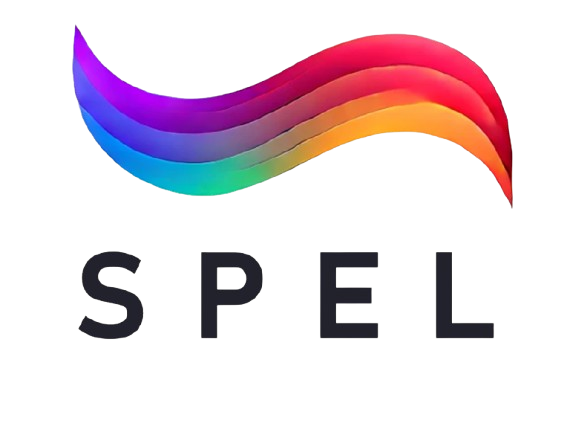

Soft Photonics & Electro-optics Lab소프트 포토닉스 및 전기광학 연구실 (SPEL)
한양대학교 ERICA 차세대반도체융합공학부 · 남승민 교수
액정·고분자·엘라스토머 같은 부드러운 소재를 설계해
빛(LIGHT), 에너지(ENERGY), 움직임(MOTION)을 제어하는 차세대 소자를 만듭니다.
빛(LIGHT), 에너지(ENERGY), 움직임(MOTION)을 제어하는 차세대 소자를 만듭니다.
LIGHT 가변 포토닉 소자
ENERGY 스마트 윈도우
MOTION 소프트 액추에이터
INTELLIGENCE 시뮬레이션 · AI 설계
HANYANG UNIVERSITY ERICA
잡아당기면 색이 변하는 고무: 키랄 액정 엘라스토머 (CLCE)모든 연구의 출발점
실제 소자 동작 × 나선 구조 시뮬레이션
실제 소자 동작 · 손으로 당긴 CLCE 필름
실험 영상
고무처럼 늘어나는 광학 필름색소가 아니라 나노 나선 구조가 빛을 반사해 색을 만듭니다 (구조색)
필름 내부에서 일어나는 일 · 액정 분자 나선 (helix)
실시간 판독 · 반사 스펙트럼 (모델 계산)
변형률 ε (얼마나 늘렸나)
0 %
나선 피치 P (한 바퀴 도는 길이)
400 nm
반사 파장 λ = n · P
640 nm
Nam et al., Adv. Mater. 35, 2302456 (2023) · 보충 영상 1 · 원리: 브래그 반사 λ ≈ n·P
다중 픽셀 광소자: 한 번 당기면 세 가지 색으로 갈라진다Adv. Mater. 2023 · 표지 논문
실제 소자 동작 × 픽셀 설계 시뮬레이션
실제 소자 동작 · 3×3 CLCE 픽셀, 가로·세로 동시 인장
실험 영상
같은 필름, 같은 힘, 서로 다른 색픽셀마다 단단한 정도(탄성률)를 다르게 설계해 늘어나는 정도를 프로그래밍
픽셀 설계 시뮬레이션 · 픽셀별 변형률 → 색
실시간 판독 · 픽셀별 반사 파장 (모델 계산)
기판 면적 변형률 ε (가로·세로 동시 인장)
0 %
색 그룹 (빨강 · 초록 · 파랑)
1 / 3 가지 색
파장 분리 폭 (가장 긴 λ − 가장 짧은 λ)
0 nm
Nam et al., Adv. Mater. 35, 2302456 (2023) · 보충 영상 3
광 암호화 소자: 늘려야만 보이는 카멜레온Adv. Mater. 2023 · Light: Sci. & Appl. 2025
실제 소자 동작 × 변형 분배 시뮬레이션
실제 소자 동작 · 카멜레온 그림이 숨은 필름
실험 영상 · 약 4배속
평소에는 그냥 투명한 필름반사 파장을 눈에 안 보이는 적외선에 숨겨두고, 당기면 가시광으로 끌어옵니다
필름 내부에서 일어나는 일 · 말랑한 부위가 더 많이 늘어난다
실시간 판독 · 반사 스펙트럼 (모델 계산)
기판 면적 변형률 ε
0 %
해독 상태
숨김
가시광 영역에 들어온 부위
0 / 4 부위
Nam et al., Adv. Mater. 35, 2302456 (2023) · 보충 영상 10 · 두께 제어 방식: Nam et al., Light Sci. Appl. 14, 136 (2025)
컴퓨터로 먼저 만들어 본다: 시뮬레이션 · AI 기반 설계실험 ↔ 시뮬레이션 피드백 루프
유한요소 해석 × 판독 알고리즘 검증
유한요소 해석 (FEM) · 다중 픽셀 소자(3×3)를 컴퓨터로 재현
시뮬레이션 · 빨강: 적게 늘어남 · 파랑: 많이 늘어남
색 → 변형률 판독 검증 · 정답을 아는 가상 영상으로 시험
입력: 색이 변하는 필름 영상
정답 변형률 지도
색으로 추정한 변형률 지도
실선: 정답 · 점선: 색으로 추정
광학 (Lumerical)
FDTD 전자기 해석
나선 구조의 반사 스펙트럼 계산
역학 (COMSOL · ABAQUS)
유한요소 해석
어디가 얼마나 늘어날지 예측
데이터 (Python · MATLAB)
머신러닝 · 역설계
목표 색에서 거꾸로 구조를 설계
검증 결과 (오른쪽 영상)
상관계수 0.81
평균 절대오차 2.6 %p (변형률 0–25 %)
왼쪽: Nam et al., Adv. Mater. 35, 2302456 (2023) · 보충 영상 3 (FEM) · 오른쪽: 연구실 내부 검증 영상
CLCE 바이오 센서: 몸의 움직임을 색으로 읽는다카메라로 읽는 광학 판독 · 웨어러블 응용
실제 판독 × 웨어러블 적용 사례
색 추적 판독 · 첫 장면의 CLCE 영상을 CIE 1931 색좌표로 추적
실험 영상 · MATLAB 색 좌표 추적
카메라 영상만으로 읽는 센서필름의 색 좌표(x, y)를 프레임마다 추적 → 변형률로 환산할 수 있어 센서 자체에는 배선이 필요 없음
다른 연구팀 사례 · 웨어러블 섬유 센서
실시간 판독 · 변형률 기록 (CLCE 모델)
관절 굽힘 각도 (가운데 영상 기준)
0°
CLCE로 읽는다면 → 색 · 변형률
0 %
판독 방식 두 가지 · 가운데 영상은 둘 다
광학카메라로 색 판독
전기계측기로 저항 판독
가운데: Zhao et al., ACS Appl. Mater. Interfaces 15, 16063 (2023) 보충 영상 · 왼쪽: Adv. Mater. 2023 보충 영상 1의 색 추적 (학부연구생 과제)
Shape light with us호기심과 열정, 도전 정신을 가진 학생이라면 전공에 관계없이 환영합니다.
spel.hanyang.ac.kr
남승민 교수 · namsm@hanyang.ac.kr · 한양대학교 ERICA 차세대반도체융합공학부
Soft Photonics & Electro-optics Lab
Soft Photonics & Electro-optics Lab